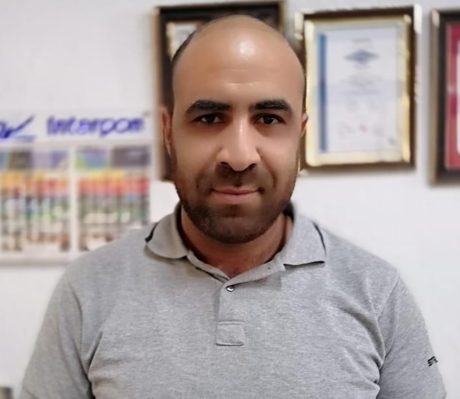

About Me - Mohamed Amine Marouguen

Contact Information:
- Email: m.a.marouguen@gmail.com
- Location: Larache, Morocco
- Phone: +212 695 983397
Personal Information:
- Date of Birth: 12/01/1986
- Nationality: Moroccan
- Regions of Expertise: Africa, Europe, Middle East, USA
Professional Summary:
As a certified Quality Manager with ISO 9001, 14001, and ISO 45001,
I bring a unique blend of commitment to operational excellence and proven expertise in driving digital transformation.
I integrate recognized standards with digital opportunities to confidently shape the future of our company.
Education:
- Master's Degree in Industrial Engineering
- ENSA National School of Applied Science, Kenitra, Morocco
- September 2023 to July 2025
- Master's Degree in Finance, Audit, and Control
- ENCG National School of Business and Management, Tangier, Morocco
- September 2023 to July 2025
- MIT MicroMasters Program in Supply Chain Management
- MIT Center for Transportation & Logistics, Boston, MA, USA
- September 2023 to April 2024
- Bachelor of Economics and Business Management
- ENCG National School of Business and Management, Tangier, Morocco
- September 2019 to July 2023
- Bachelor Degree in Industrial Engineering
- ENSA National School of Applied Science, Kenitra, Morocco
- September 2022 to July 2023
Skills:
- Supply Chain Management
- Quality Management (ISO 9001 Lead Auditor)
- Lean Six Sigma Methodologies (Black Belt)
- Environmental Compliance (ISO 14001 Lead Auditor)
- Safety Compliance (ISO 45001 Lead Auditor)
- Project Management (Google Project Management Professional Certificate
Languages:
- Arabic
- Spanish
- French
- English
Computer Skills:
- Microsoft Power BI Data Analyst Professional Certificate
- Meta Front-End Developer Professional Certificate
- Meta Database Engineer Professional Certificate
- Meta Back-End Developer Professional Certificate
- Stanford University DeepLearning.AI Machine Learning Specialization
- IBM Deep Learning Professional Certificate
Work Experience:
QSE Manager
- Company: EXTRUMAROC 2 (STRUGAL)
- Location: Larache, Morocco
- Since: October 2016
Key Achievements:
- Implemented and managed the Integrated Management System (IMS) to ensure compliance and quality across all operations.
- Developed and monitored QHSE action plans, coordinated corrective actions, and maintained high standards in supplier quality.
- Successfully handled customer complaints, ensuring continuous satisfaction.
- Created and managed dashboards with various Key Performance Indicators (KPIs) for processes, customer complaints, and supplier performance.
- Led digital transformation initiatives using MS Power BI and MS Power Platform, optimizing processes and reducing production costs without compromising quality.
- Implemented methodologies such as Six Sigma and Lean Manufacturing to foster a culture of continuous improvement.
- Successfully managed powder coating validations with a commitment to the highest standards.
- Obtained and maintained essential certifications including ISO 9001 in 2017, QUALICOAT in 2018, QUALANOD in 2020, ISO 14001, and ISO 45001 in 2023.